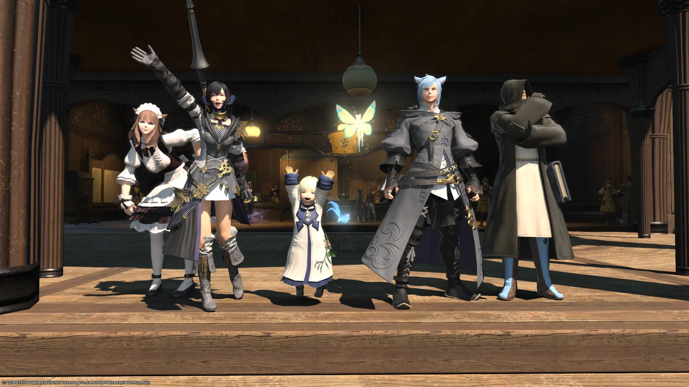
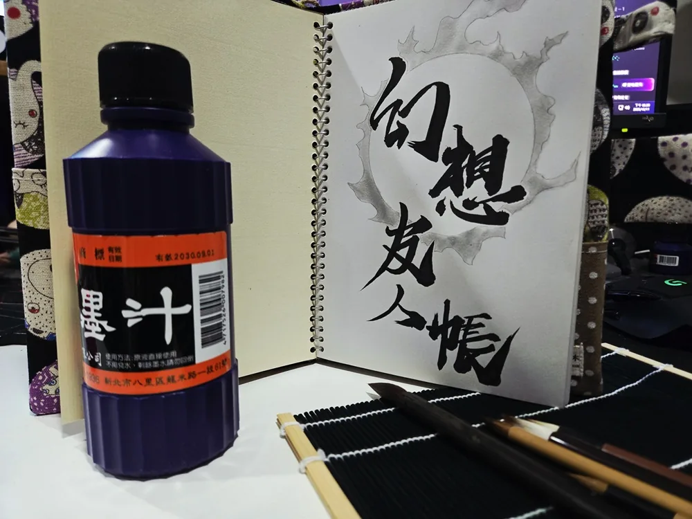

About
鳳凰伺服器開服公會，半休閒、重感情。
Our Story · 緣起
「友人帳」由一群來自其他知名 MMORPG、現實中也相識多年的老朋友組成，
有著共同的遊戲理念與默契，開服第一天就一起把公會創了起來。
自 2025 年 12 月起持續招收新成員至今。
我們大多平日白天上班、晚間上線；公會常駐雙 BUFF，
每週固定開團挑戰各種極限的樂趣。半休閒，但從不無聊。

The Name · 名字的由來
公會名靈感來自《夏目友人帳》。我們期許在這裡， 每一個新加入的名字都不只是普通路人， 而是寫進「友人帳」上、值得相知相惜的友緣人。

What We Do · 日常
溫暖的交流氛圍 愛在 Discord 閒聊、分享遊戲內的沙雕趣事與生活點滴，也少不了實用攻略。沒有高冷，只有滿滿友善與歡笑。
理性溝通的副本團 週六日晚上的 8 人極副本劇情開拓團，從 2.0 一路打到 4.0。定期在 DC 調查進度與出團意願，手把手陪你一起滅團（誤）……以致通關。還有大家一起賺的藏寶圖冒險團。
共同打造的家園 開服第一天集資買下白銀鄉 9 區 30 號溫泉大型房：商店 NPC 齊全、裝潢用心、潛水艇運作中、菜田有專人負責。白銀鄉 9 區 30 號溫泉 L 房 RP 店籌劃中，歡迎來訪作客。
大家一起決定 公會特效、活動時間與內容都投票決定。辦過 DC 知識王比賽、公會小網聚，暑期網聚規劃中，一起留下值得紀念的回憶。
Join Us · 加入我們
方法一（推薦） 加入公會 Discord 的歡迎候客室 →
私訊會長 ke7235，留下遊戲 ID 並註明來自巴哈招生文 → 等待審核。
方法二 遊戲中直接搜尋「幻想友人帳」申請入會。
方法三 遊戲內私訊幹部，接受公會邀請。
平日 20:00–24:00、假日全天，可密會長「小克瑞爾」或多位幹部。